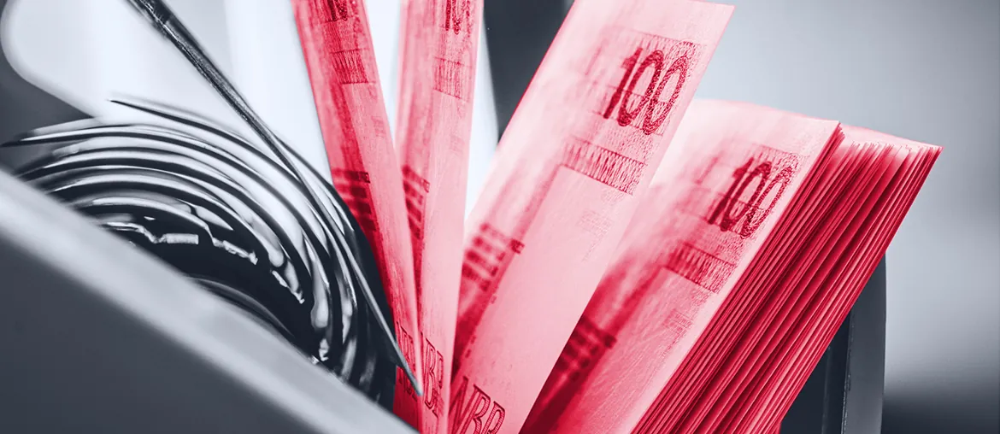

Map the risk list
Turn the architect brief into a ranked backlog for NWB Portal, supplier links, security controls, and technical debt.
Saw NWB Bank is hiring an IT Architect to shape a secure, efficient IT landscape. Here is how Elinext would support the roadmap without adding noise to your team.
The architect role says NWB is moving from daily IT control to a clearer long-term roadmap. The hard part is not only the design. It is turning the technical debt list, supplier work, portal changes, and security gates into shipped changes. If this stays inside a small team, delivery can slow while risk keeps growing.
We would start with a dedicated squad under your IT lead or product owner. The pilot runs eight weeks, with a short demo and risk review each week.
Turn the architect brief into a ranked backlog for NWB Portal, supplier links, security controls, and technical debt.
Review OTAP, rollback, monitoring, and logs so portal and banking changes have clear support evidence.
Add regression tests for client onboarding, document exchange, reports, and access rights around the portal flow.
Deliver small changes with design notes, test results, and handover material for NWB and key suppliers.
Elinext is a full-cycle software development company, active since 1997, with about 700 in-house specialists and no freelancers. For NWB, the fit is our banking, QA, DevOps, and enterprise web work under strict security rules. We hold ISO 9001 and ISO 27001, which matters for regulated delivery. Our named customers include Broadcom, Siemens, Volkswagen, and TUI. That is the base for the small squad above: senior people who can work inside your rules.

Elinext built and tested a loan tracking environment for a financial services client, with automated data sync and reporting.
Read case study
Elinext supported a long-running cash and liquidity system, upgrading design and delivery for a banking client.
Read case study